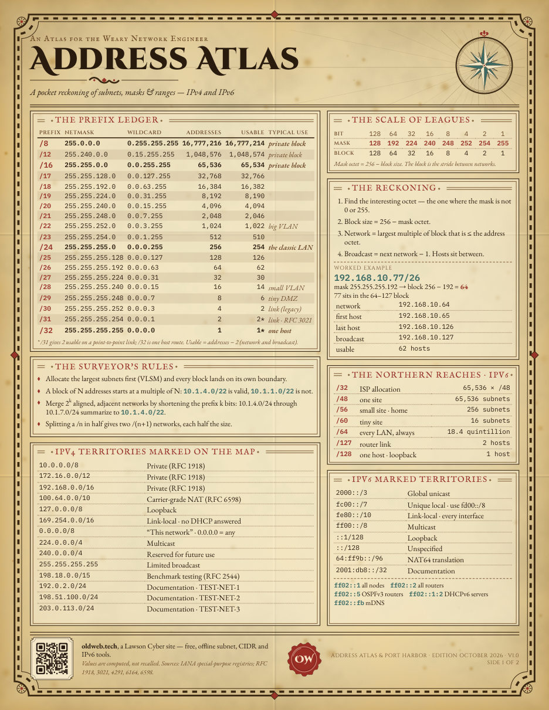
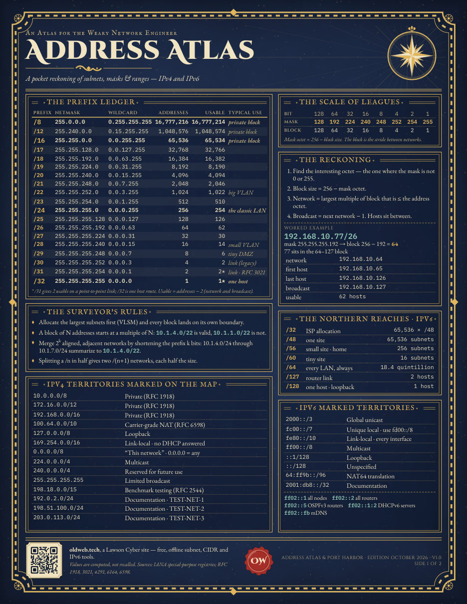
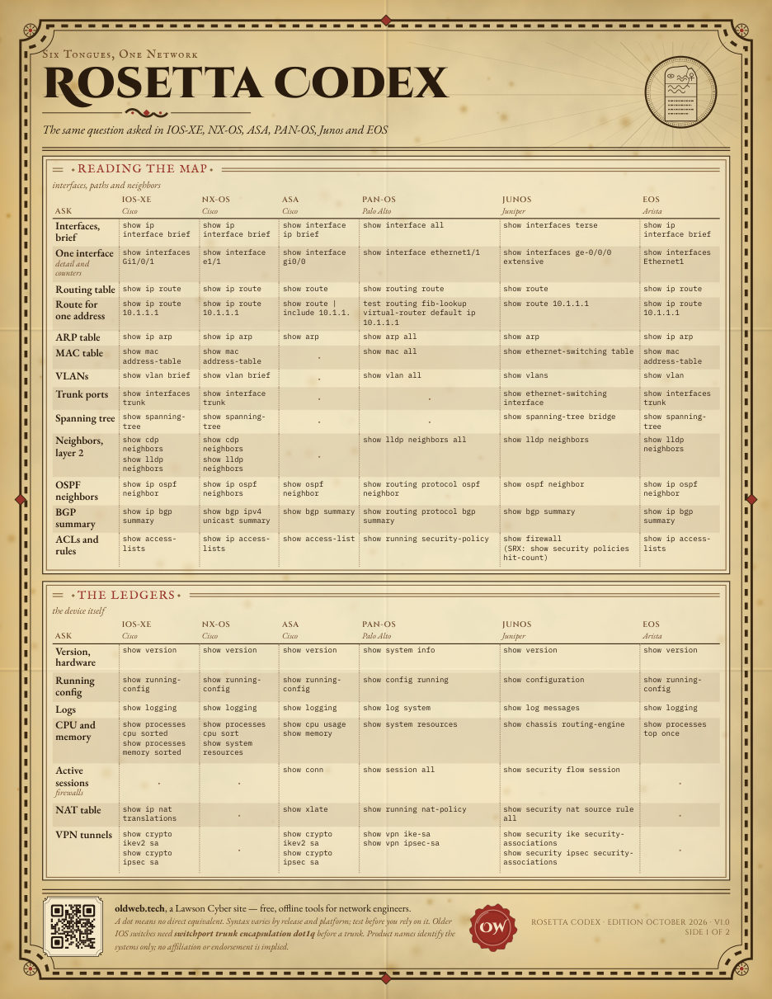
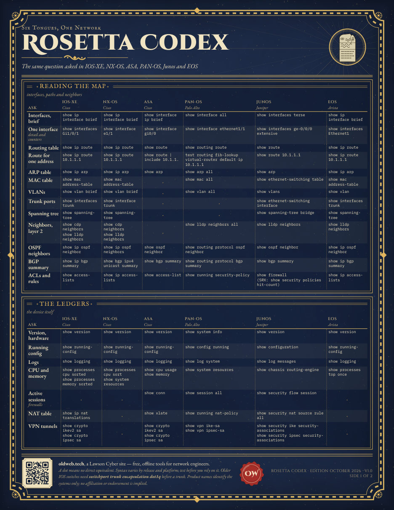

printed reference sheets
The subnet, port and command charts from this site, printed on Letter-size sheets for your wall or desk.
status
Not for sale yet. The artwork is finished and the first test prints are being ordered. There is no price, store or ship date to give you today.
To hear when they are available, use the feedback link at Lawson Cyber and mention the sheets.
address atlas & port harbor


- Address Atlas: IPv4 prefix lengths (/8, /12 and /16 to /32) with masks and host counts, the special-use ranges, and the common IPv6 prefixes.
- Port Harbor: well-known TCP and UDP ports and protocol numbers, checked against the IANA registry when the sheet is built.
- The same data as the Subnet Calculator, readable without a laptop.
rosetta codex


- 36 everyday tasks, two sides, each shown in six vendor syntaxes: Cisco IOS-XE, NX-OS and ASA, Palo Alto PAN-OS, Juniper Junos and Arista EOS.
- Built from vendor documentation. The commands are being checked on real devices before the sheets go on sale.
details
- Letter size, 8.5 by 11 inches. Two matched editions, Portolan for a bright office and Celestial Vellum for a dim one.
- The material and finish are not decided yet. Test prints will settle that before anything is listed.
- Each sheet carries a QR code back to this site. It is tagged by sheet and edition, so the site's page statistics can count which sheet sent a visitor. See the privacy page.
Last updated 2026-10-06.